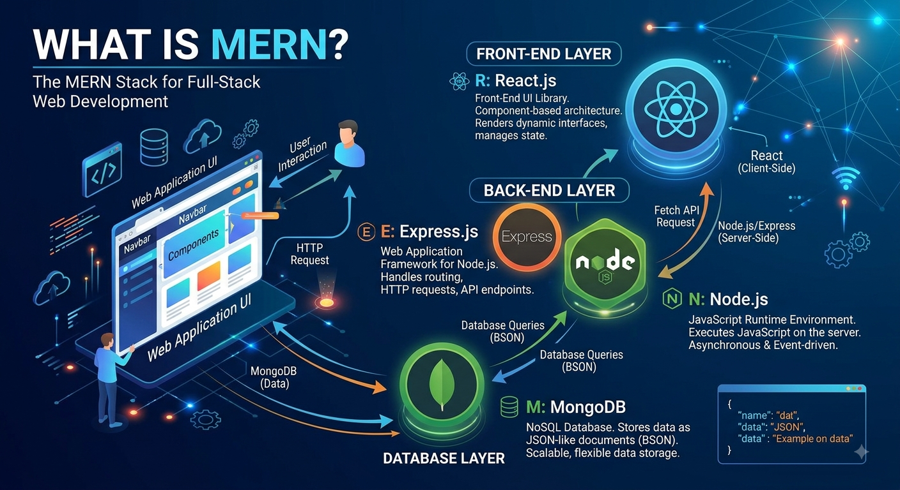

What is MERN Stack?
The MERN stack is a popular collection of JavaScript-based technologies used to build full-stack web
applications. It allows developers to construct both the front-end user interface and the back-end server
architecture using a single programming language: JavaScript.

Core Components
|
Component |
Type |
Primary Role |
| M |
MongoDB |
NoSQL |
Stores application data as JSON-like documents (BSON). |
| E |
Express.js |
Web Framework |
Server-side framework for Node.js that handles routing and HTTP requests. |
| R |
React.js |
Front-End Library |
Component-based UI library for rendering dynamic client-side user interfaces. |
| N |
Node.js |
Runtime Environment |
Executes JavaScript on the server side, outside of the browser. |
Architecture & Data Flow
- Client Layer (React): The user interacts with the React interface in their browser.
- API Request Layer (Express + Node): React sends asynchronous HTTP requests (via REST APIs or GraphQL) to the Node.js runtime running the Express web server.
- Database Layer (MongoDB): Express processes business logic, retrieves or updates data in MongoDB, and returns JSON responses back to the React front end.
Key Advantages
- Single-Language Ecosystem: Writing both client-side and server-side code in JavaScript reduces context switching and speeds up development.
- Component-Driven UI: React's virtual DOM allows for efficient UI updates without full page reloads (Single Page Applications / SPAs).
- JSON End-to-End: Data flows natively as JSON objects across MongoDB, Express, and React, eliminating complex data mapping.
- High Performance: Node.js uses an asynchronous, event-driven architecture designed to handle concurrent non-blocking I/O operations.